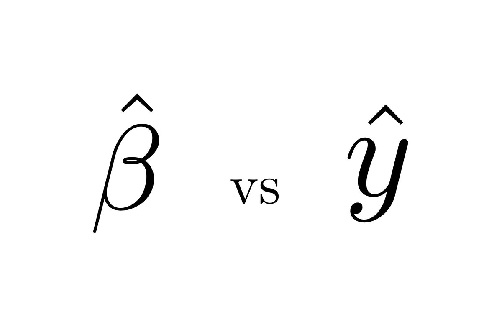

y = βX + ϵ
Regression → f(X) = α + βX + ϵ
Regression
CART → f(X)= Tree
CART
Random Forest → f(X)= Tree Ensemble
Random Forest
Gradient boost → f(X)= Sequence of predictors (e.g. trees)
Gradient boost